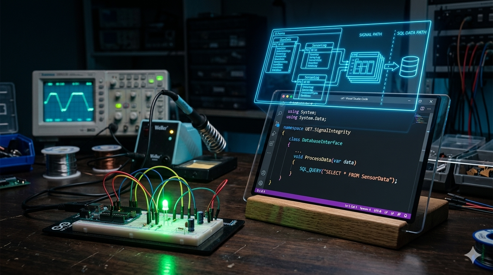

In the quiet, intense atmosphere of a UET engineering lab, the success of a project is rarely defined by the final, flashing indicator. It isn't enough that the logic gate activates, or that the motor spins. The light might turn on today by chance, but in true engineering, the results are ephemeral without the documentation that validates why.

Image 1: The foundational analytical process: tracing signal integrity using an oscilloscope in a UET lab environment.
This principle is what I have carried over into my software development journey. Just as a physical circuit must be validated for signal integrity to avoid catastrophic noise, a software interface must be validated for logical integrity to prevent catastrophic data loss.
My academic path requires balancing divergent skill sets: one afternoon might be dedicated to validating voltage rails in a hardware lab, while the next is spent debugging a complex C# interface. We often treat these as different disciplines, but the core philosophy is identical: map the data path from input to output.
1. The Analytical Approach to the Black Box
In electronics, we must frequently confront the "Black Box"—a component where the input-to-output relationship is defined, but the internal workings are hidden. If that black box introduces noise, our only defense is the analytical process. By tracing the "Signal Path Logic," we can isolate the point of failure.
As a developer, I use this exact mindset. When I debug a complex C# function, I am not just looking for an output; I am using logging and step-by-step execution to trace the logical signal from the raw data input. My goal is to ensure the **"Signal Integrity of Code."**
2. Data Integrity from Breadboard to Database

Image 2: Bridging the gap: A technical visualization showing how low-level circuit logic influences the architectural design of high-level C# and SQL data systems.
The gap between a breadboard and a database is smaller than most people think. In both domains, the primary enemy is data corruption—the point where the intended signal becomes noisy or lost. My experiences with physical signal integrity are what make my technical documentation precise.
Consider the experience of documenting a complex **SQL Lab Manual**. In this domain, success isn’t a successful query; success is an efficient query architecture that can withstand unexpected inputs. Every table relationship is a crucial connection point, and any gap in the **"SQL DATA PATH"**—as visualized in the image above—is a point of future failure.
My philosophy is that an engineer cannot leave gaps in a circuit diagram, and a software architect cannot leave gaps in a documentation structure. Success is the interface itself: the clean, validated structure that proves the path from raw signal to meaningful output.
3. Tracing the Architecture of Success

Image 3: Detailed documentation: Tracing and validating successful outputs by closely documenting the precise signal paths.
Whether I am validating frequency response in a circuit or validating the efficiency of an algorithm, the standard is unchanging: **Clarity is Power**. As I continue my journey from UET to a professional Software Engineer, I am not just learning to calculate voltage or write queries; I am learning to architect solutions that are stable, transparent, and built on validated documentation.